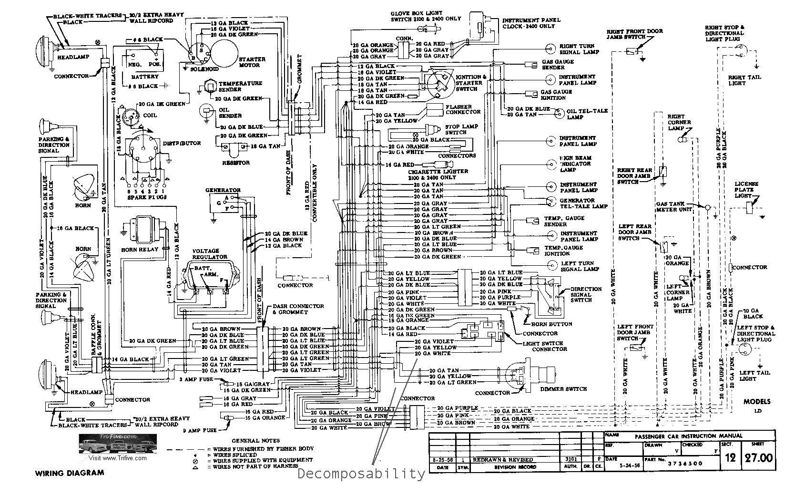
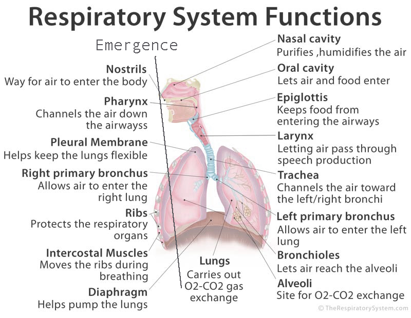

Q6 Group Activity. Each student will need to Bring in a series of 4 diagrams that show evidence of Modularity, Decomposabilty, Emergence and Chaos Theory.
Specifically :
1. -- One diagram must have more than 100 elements
2. -- One diagram must be something considered living
3. -- One diagram must be represent something that is not visible or physical
4. -- One diagram must be a system based on modularity
100 Elements || Decomposabilty
Diagram of lights in a car, shows dash lights split into each individual bulb.

Living || Emergence
Diagram of the respiratory system, carbon dioxide is emergent.

Not Visible || Chaos Theory
Diagram of study routine, any change can ripple into study effectiveness while still having achieved studying.
Modularity || Modularity
Diagram of modular cell phone, parts can be changed out.